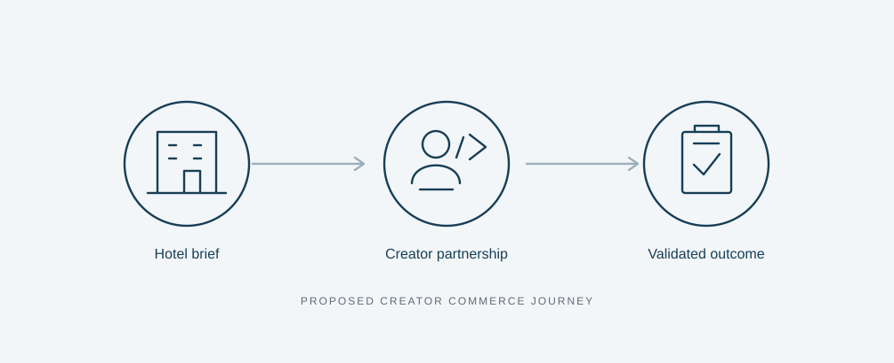

Phase 1 · Solution development
Explain the service
Clarify the value proposition, fit with Stay22, participant roles, and customer journey.
From a business idea to a practical implementation strategy
Semi-finalist
As a key contributor to the original business idea, I helped shape Stay22 Creator Commerce and translated the concept from solution design into a practical implementation strategy.
Stay22 helps travel publishers and creators monetize booking intent through affiliate relationships. Our team explored how those relationships and capabilities could support an additional commercial service for independent hotels.
The opportunity connected two needs: hotels looking for more coordinated creator collaborations and travel creators with relevant content and audiences. The team assessed market context, competitive precedents, and illustrative economics to develop a proposal whose commercial value could be tested.
Stay22 Creator Commerce would connect independent hotels with relevant, opted-in travel creators. Hotels would fund managed campaigns, with a service fee for coordination and contracted performance fees on eligible, validated bookings.
I helped develop the original business idea with Team RICE, then made the concept concrete by explaining its fit with Stay22 and the experience it would create for hotels, creators, and travellers.

Creator matching, sponsored campaign operations, and hotel booking verification were proposed capabilities to develop or integrate. Creator Commerce was a team proposal.
The hotel specifies its audience, budget, and bookable room offer.
Stay22 selects relevant, opted-in creators using destination, content, and permitted performance signals.
Creators approve sponsored placements with clear disclosure and tracked links.
Travellers book with the hotel or an authorized provider.
Eligible stays support reporting, agreed performance fees, and creator payouts.
In Phase 2, I turned the solution design into a practical recommendation for delivery: what needed to happen, which resources and partnerships were required, and what evidence should determine whether to proceed.
Clarify the value proposition, fit with Stay22, participant roles, and customer journey.
Identify workstreams, dependencies, resources, readiness checks, risks, and decision gates.
The plan coordinated hotel partnerships, creator participation, product and technology, legal and compliance, and measurement and finance. It moved from contracting and an MVP to live campaigns, validated outcomes, and a scale-or-stop decision.
Required resources included a pilot lead, hotel sales, creator coordination, engineering, data and legal support, participating hotels, and a booking integration partner. These were proposed requirements.
My implementation recommendation made progress conditional on readiness and evidence. The proposed gates covered partnerships, technical readiness, launch, commercial validation, and scalability.
Hotels might not buy or renew, and creators might not opt in. The proposed responses were a limited paid pilot, renewal assessment, creator consent, placement approval, and clear compensation.
Sponsored offers needed disclosure before the click and no unsupported best-price claims. Partner terms and data requirements required review before launch.
Tracked bookings do not establish incremental demand. The proposed comparison used the current OTA offer and considered displaced earnings. Booking verification needed testing, with launch paused if integration readiness remained unresolved.
The final recommendation was to confirm the necessary partnerships and integration, run a controlled pilot, and stop if validated evidence did not support commercial viability.
I was one of the key contributors to the original Creator Commerce idea, developed collaboratively with Team RICE. My work connected business innovation with a clear service experience and a practical plan for delivery.
Primarily responsible for Solution Explanation and End-to-End Customer Journey. I made the idea concrete by explaining its fit with Stay22 and how it would work for each participant.
Phase 1 slides 5–6.
Primarily responsible for Implementation Plan, Milestones & Key Resources, Risk Management, and Final Recommendation. I turned the concept into a phased execution strategy with delivery requirements, risk responses, and decision gates.
Phase 2 slides 7–10.
Market research, competitive assessment, financial modelling, and scenario analysis were collective team work that informed the proposal and my implementation planning.
A coordinated creator channel with booking performance measurement.
Additional paid collaborations alongside affiliate monetization.
Relevant accommodation offers with clear sponsorship disclosure.
A complementary service revenue stream using existing relationships and travel-content expertise.
These were intended benefits. The team's financial scenarios explored potential viability under assumptions; business impact would require validation through a pilot.
Semi-finalist · Retail Innovation Challenge 2026
Our team advanced to the semi-finals with our Stay22 business case proposal.
The team delivered Phase 1 and Phase 2 presentations, a proposed business concept, and an implementation strategy. My work connected the original idea with the customer journey and the practical requirements for delivery.
This project demonstrates my contribution to business innovation, commercially relevant solution design, and the translation of strategic ideas into actionable implementation plans.
This is a qualitative portfolio account. It does not claim that Stay22 adopted the proposal, that a pilot launched, or that projected business benefits were realized. Confidential figures, internal case materials, and original presentations are omitted.
The team drew on public company information, hotel distribution research, and creator collaboration precedents. These sources provided context rather than proof of demand or incremental impact for our proposed service.